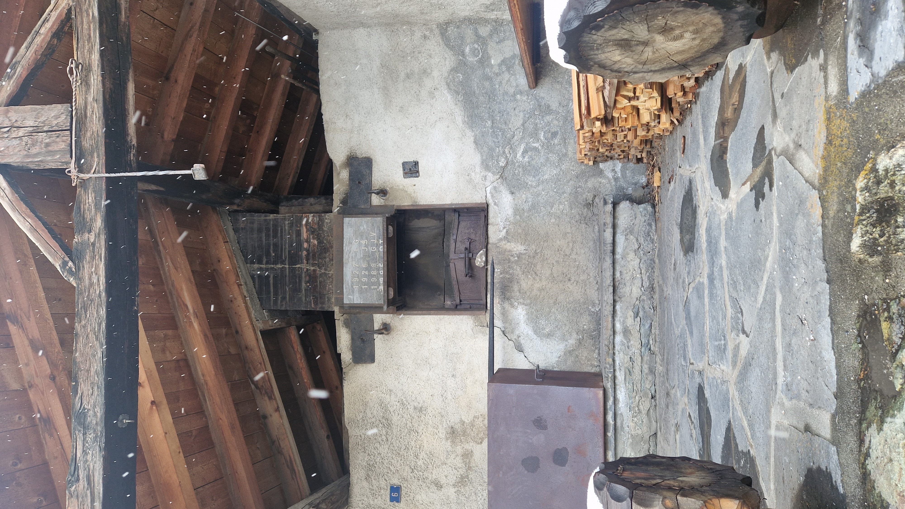
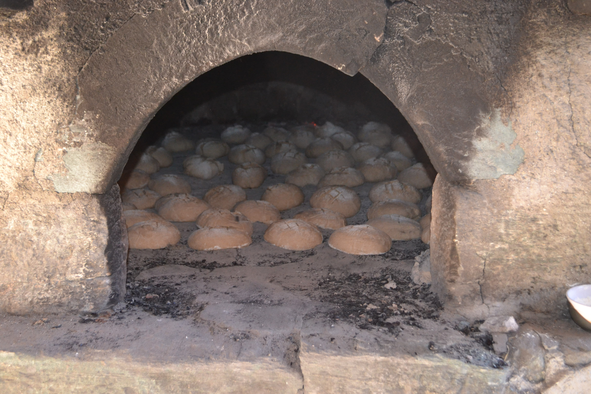

Contexte du projet
Le présent projet découle d'un inventaire des pratiques effectué dans la région de l'Entremont et la vallée du Trient, fondé sur 29 entretiens. Il s'agit d'un projet réalisé par quatre étudiantes du Master en géographie, environnement et aménagement de l'Université de Lausanne. Le projet est mené en collaboraiton avec le Centre régional d'étude des populations alpines (CREPA).
Et pourquoi on en parle encore à ce jour?
Depuis le Moyen Âge jusqu'à la modernité
Alors qu’ils relevaient de l’autorité seigneuriale au Moyen Âge,
les fours banals et toute la culture de céréale en région de montagne avait une importance vitale
et représentait le coeur de la vie sociale. Ces pratiques sont organisés et rendus possibles grâce à des efforts
communautaires majeurs, géré en bien communs.
Un déclin progressif au XIXe siècle
Les fours banal ont vu leur fonction diminué avec l'arrivée des chemins
de fer et les grands changements liées à la modernisation des styles de vie (industrialisation, professionnalisation du
métier de boulanger). À ce moment, des produits en provenance de l'extérieur de la Suisse arrivaient, et pour moins chers.
Cela a mené à une diminution des cultures de blés. Les fours banals qui ont su résister à ce changement sont les plus éloignés,
dans les régions difficiles d'accès.
Un renouveau depuis les années 80-90
C'est seulement vers les années 80-90 que de nombreux fours ont été restaurés, et que les
anciens consortages ont repris vie afin de rénover puis faire perdurer les savoirs. À ce jour, leur gestion est assurée par
des consortages, associations ou confréries, qui décident de leur entretien, de leur rénovation
et de leur mise en valeur.
La Rosière

Les familles s'inscrivent à l'avance pour leur place durant la semaine. Il y a un tournus concernant le nettoyage et le chauffage du four... Lire la suite
Prassumy
Une transmission orale de génération en génération a lieu. Les traditions se transmettent en voyant les autres... Lire la suite
Soulalex
Le comité effectue sa propre recette. Un repas est organisé durant les jours de cuite. Tout le monde peut... Lire la suite
Reppaz
Chaque famille s'organise avec ses recettes et pratiques. Une fois le four allumé, c'est un tournus de qui... Lire la suite
Chez-les-Reuses
Tout est distribué aux membres du consortage. Chaque consort fait son pain et sa spécialité. Les fourn... Lire la suite
Commeire
Le four est chauffé durant la semaine, puis la fournée a lieu le samedi, suivi d'une raclette. La cuite... Lire la suite
Somlaproz
Aucune info pour le moment Lire la suite
Arlaches
Aucune info pour le moment Lire la suite
Biolley
Aucune info pour le moment Lire la suite
Verlonne

Une fois par année, le consortage se réunit pour une journée de cuite. La cuite de pain est une raison... Lire la suite
La Douay
Aucune festivité n'est organisée autour des fournées. La fournée annuelle a lieu mi octobre. Lire la suite
Vollèges
Aucune info pour le moment Lire la suite
Sarreyer
Aucune info pour le moment Lire la suite
Vens

Les fournées ont lieu sur 2 jours. Une fête est organisée lors de la vente de pains réservés à l'avance... Lire la suite
Levron
Des cuites exceptionnelles sont réalisées lors d'événements spéciaux. La capacité du four est de 50 pains. Des cuites... Lire la suite
Cotterg
Le four a une capacité de 75 pains. Ces derniers sont pétris à la main. Le pain est distribué... Lire la suite
Versegères
Chaque famille vient à tour de rôle et est responsable d'entretenir le feu. Chaque famille passe commande... Lire la suite
Lourtier

La pâte est préparée dans l'ancienne école. La recette de pain vient de Vollèges. La capacité du four... Lire la suite
La Crettaz
Les pains cuits sont distribués gratuitement. Il y a parfois une cuite de polenta au four. Une fois par... Lire la suite